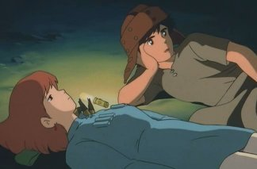
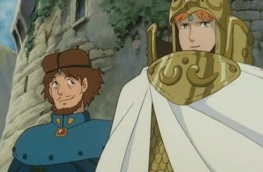
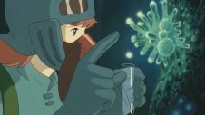
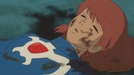
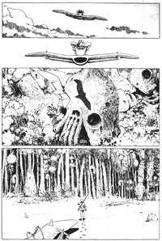
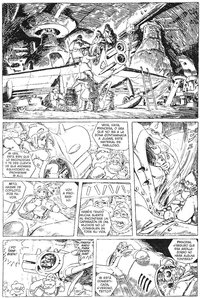

("Los guerreros del viento" es una versión recortada)
Película · 116 minutos · Estreno en Japón: Marzo 1984
Dirección: Hayao Miyazaki (guión basado en un manga propio)
Música: Joe Hisaishi
Nausicaä es el segundo largometraje de Miyazaki. El primero, si contamos
las películas plenamente suyas (concepción, guión y dirección).
Suele incluirse como primer película del estudio Ghibli; en realidad, es anterior.
Pero la inclusión se justifica porque es la que abrió el camino a la fundación del estudio,
y porque forma parte del espíritu Ghibli.
Ambientación: Futurista, una especie de edad media post-apocalíptica, región indeterminada.
Sinopsis:
Pasados varios siglos de una guerra catastrófica, la humanidad
sobrevive esforzadamente, a orillas de un bosque contaminado (el Mar de la descomposición)
con gases tóxicos e insectos mutantes gigantes, que cubre gran parte de la Tierra.
El Valle de Viento es un reinado minúsculo, rodeado de reinos más poderosos y hostiles.
Nausicaä es la única hija sobreviviente del rey; gran piloto y guerrera, es también
compasiva y solícita de toda vida; trata de encontrar un sentido del
bosque contaminado y se resiste a ver a los insectos como enemigos, sobre todo
a los Ohms, artrópodos gigantescos y temibles con los que tiene una extraña simpatía.
La crisis estalla cuando el reino vecino de Tolmekia, al mando de la princesa Kushana,
invade el pueblo e intenta revivir a un mortífero "Dios de la guerra", de los tiempos de la gran guerra, para triunfar contra sus enemigos y contra el bosque contaminado.


Es una de las obras de tono más épico de Miyazaki; comparable en este aspecto (y en el tema ecologista) a Mononoke. El género de "película de acción" y el escenario fantástico también lo acercan a Laputa. Rasgos muy típicos de Miyazaki, casi constantes, son el carácter de la protagonista -la quintaescencia de la heroína-Miyazaki-, con su esfuerzo pacificador y comprensivo en medio de la discordia, y los vehículos voladores.
La evaluación de los fans es dispar; preferida por varios, amada por muchos, tampoco faltan los que la tienen por la obra menos satisfactoria de Miyazaki. Sus defectos más evidentes son por el lado técnico y por la resolución de la trama. Ambos aspectos entendibles por las circunstancias de la realización: primera película "grande" de los realizadores, hoy se ve algo rudimentaria en el dibujo y -sobre todo- la animación. En cuanto a lo segundo: a la dificultad de adaptar un manga muy complejo (y sobre todo, lejos de estar terminado) a una película, se suma el modo de trabajo de Miyazaki, que parte de los detalles hacia el todo y no al revés, sin una visión clara de cómo redondear la historia. Esto, sumado a las imaginables carencias de recursos y tiempo, dieron por resultado una resolución argumental endeble, un final apresurado y muy poco satisfactorio. Se dice que Mononoke representó en buena medida una respuesta a esta insatisfacción.
La música estuvo a cargo de Joe Hisaishi, (entonces casi desconocido, luego se hará  célebre como musicalizador de todas las películas de Miyazaki, y de otros directores, Kitano entre ellos). También se ve como obra primeriza, como buscando definir un estilo; especialmente en la alternancia de una orquestación clásica con una electrónica sintetizada. Parece que en aquellos tiempos Hisaishi estaba experimentando con música electrónica minimalista; pero son las canciones con esta textura sintetizada las que hoy nos suenan envejecidas. Y es el estilo clásico el que da lo mejor de Hisaishi, y al cual se atendrá después. Se destacan las dos secciones de la obertura y el "requiem". Especialmente memorable es la parte de los créditos iniciales.
{kind=link}
Los títulos iniciales recorren un bello tapiz, dibujado por Miyazaki, inspirado en tapices medievales (sobre todo el de Bayeaux) que representan gráficamente una historia, generalmente épica. En este caso representa la catástrofe que destruyó la civilización humana (izquierda), con la intervención de los dioses de la guerra, la aparición de los insectos gigantes (ohms) y el bosque contaminado (plantas con esporas, al centro), los sufrimientos de los supervivientes, y la espera del salvador, la "persona vestida de azul" que asemeja un ángel, a la derecha.
{kind=link}
El personaje de Nausicaä tiene, así, algunos rasgos mesiánicos, en el sentido de identifarse con un salvador de la humanidad profetizado y esperado. En el manga, Nausicaä se ríe cuando un niño que la ha visto llegar volando en su mehve (avioneta) la compara con un ángel. El color azul es el de la sangre de los Ohms; y también el color de los ojos de éstos cuando no están furiosos.
La trama puede dividirse en seis secciones:
1. (0:00-0:20) Planteo. Nausicaä, el valle del Viento, el bosque contaminado, los Ohms.
2. (0:20-0:45) Muerte de Lastel. Los tolmekianos invaden el valle. Nausicaa es llevada cautiva.
3. (0:45-1:00) Asbel ataca las naves. En el lago del bosque contaminado, Nausicaä se comunica
con los Ohms. Nausica y Asbel caen en las arenas.
4. (1:00-1:25) Nausicaa descubre el secreto del bosque. Capturada por el pueblo de Pejite.

Revueltas de los pobladores de valle intenta contra los Tolmekianos; estos son comandados por Kurotowa,
que asiste al crecimiento del Dios de la guerra. Kushana regresa.
5. (1:25-1:40) Nausicaa escapa de la nave de Pejite, es remolcada por Mito hacia su pueblo.
Descubre la estampida de Ohms provocada por la gente de Pejite, y acude a rescatar
al cachorro de Ohm torturado.
6. (1:40 1:55) Kushana provoca el nacimiento prematuro
del Dios de la Guerra como último recurso. Nausicaa rescata al Ohm, sus vestidos
se tiñen con su sangre azul...
{kind=link}
El nombre de la protagonista proviene de un personaje secundario de la Odisea. Miyazaki conoció a la Nausicaä por una libro de B. Evsling sobre mitología griega y quedó fascinado por aquella muchacha bella, sensible e independiente. En su mente quedó asociada a una princesa de Konjaku Monogatari (saga de cuentos tradicionales japoneses) amante de la naturaleza y, en particular,  de los insectos. «Cuando la productora Animage me propuso hacer el manga, decidí escribir la historia de mi Nausicaä. Estaba a punto de retirarme del mundo del manga ya que no me consideraba muy buen creador; pero la tentación de hacer una Nausicaä a mi gusto fue demasiado fuerte. Desgraciadamente, me di cuenta de mis limitaciones a medida que avanzaba el trabajo, y me está costando muchos sufrimientos desarrollarlo...», contaba Miyazaki.
{kind=link}
En verdad, la realización del manga fue la tarea más monumental de Miyazaki. La publicación se inició en 1982. Con varias interrupiones (que desesperaban a los muchos fans) el séptimo y último volumen se publicó en 1994. En 1984, recién había empezado el tercer volumen, y no tenía nada claro el desarrollo ulterior de la historia. Desde un comienzo, además, se había propuesto no usar el material para anime. Pero el éxito del manga fue ocasión del ofrecimiento de hacer la película; era la primer oportunidad (y bien podría ser la última) de hacer una película relativamente grande y enteramente propia. Con cierta resistencia, entonces, y con la condición de su viejo compañero Takahata fuera el productor, Miyazaki puso manos a la obra.
{kind=link}
El argumento de la película es muy diferente al manga. Por fuerza, por cuento éste estaba lejos de estar terminado (ni siquiera en la mente del autor) y su complejidad era enorme. Miyazaki había dibujado mapas, diseño de indumentaria... todo un mundo que en la película aparece muy resumido. La enumeración de diferencias sería demasiado larga. Los personajes de la película, de todas maneras, son los del manga (aunque algunos, como Kushana y Kurotowa, no alcanzan un desarrollo comparable; y el manga tiene muchos personajes más). La película no menciona a la tribu de los Manu, los sureños enemigos de Tolmekia con su gobierno clerical, ni la ciudad sagrada de Shua, ni los hombres del bosque, ni los carroñeros, ni el personaje de Chikuku...
{kind=link}
{kind=link}
Algunas escenas, de todas maneras, son fiel copia. En particular, la primer página del manga, Nausicaä aterrizando en el bosque contaminado y adentrándose en él... es fácil imaginar la emoción del público devoto, poder ver esas escenas (tan grabas en la retina) en colores y con una animación -para la época- relativamente fastuosa. En buena medida, fue el público del manga el que cimentó el éxito de Nausicaä, y por lo tanto el nacimiento del estudio Ghibli.
Para terminar con el manga (que merece página o sitio aparte), mencionamos que hay edición completa en español, 6 volúmenes de buena calidad, editorial Planeta De Agostini.
La edición oficial en EEUU es la de Disney, (2005). Por acá circula todavía una antigua versión recortada, llamada "Los guerreros del viento" ("Warriors of the Wind"), la única -que sepamos- con doblaje español. Versión expresamente repudiada por Miyazaki, con derechos expirados. El hecho de que incluso el nombre de la protagonista haya sido "adaptado" (princesa Sandra en español) es una muestra del maltrato recibido.